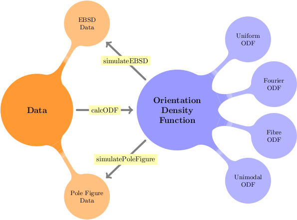
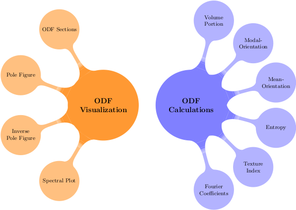

First Steps
Indroduction to analysis of ODFs
| On this page ... |
| Introduction |
| Model ODFs |
| Estimating ODFs from EBSD Data or Pole Figure Data |
| Analyzing ODFs |
| Simulate Pole Figures or EBSD Data |
Introduction
ODFs are at the very heart of MTEX. Almost any computation in MTEX can be done by estimating ODFs from various data, analyzing modell ODFs, simulating experimental data from ODFs, or calculating any texture characteristics from an ODF. The following mindmap may give you an idea what is possible in MTEX.

Model ODFs
MTEX provides a very simple way to define model ODFs, e.g. unimodal ODFs, fibre ODF, Bingham ODFs or ODFs specified by Fourier coefficients. The central idea is that MTEX allows you to calculate with ODF as with ordinary number. That is you can multiply and ODF with a certain number, you can add, subtract or rotate ODFs. More precise information how to work with model ODFs in MTEX can be found in the section ModelODFs. There are also some predefined standard ODFs used in literature.
Estimating ODFs from EBSD Data or Pole Figure Data
The second natural way how ODFs occurs in MTEX is by estimating them from EBSD or pole figure data. It should be stressed that for MTEX there is no estimated ODFs and difference between model ODFs and estimated ODF. That means any operation that is valid for model ODFs is valid for estimated ODFs as well. More information how to estimate ODFs can be found in the sections ODF estimation from EBSD data and ODF estimation from Pole Figure data.
Analyzing ODFs
MTEX provides a lot of tool to make analyzing and interpreting ODFs as simple as possible. The tools may be split into two groups - texture characteristics and visualization tools.

Have a look at the sections ODF Analysis and ODF plots for more information.
Simulate Pole Figures or EBSD Data
In order to analyse the relyability of the ODF estimation it is usefull to start with a given ODF and simulate pole figure or EBSD data, estimate an ODF from these data and to compare the estimated ODF with the original one. This allows one to find best parameters for ODF estimation as well as for the experimental design. This approach is discused in more detail at PoleFigure Data Simulation and EBSD Data Simulation.